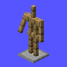

SomeMineGame.com IS STILL UNDER CONSTRUCTION. EXPECT BUGS.

What Is Armor Stand Arms?
Adds arms to armor stands for decoration. Also allows armor stands to hold items.
How Do We Use Armor Stand Arms?
We use it for decoration and to add some parity with our Bedrock players.
How Does Armor Stand Arms Work?
Where Can You Get Armor Stand Arms?
Armor Stand Arms is free on their Modrinth page. You can click the link below.
Armor Stand Arms on Modrinth